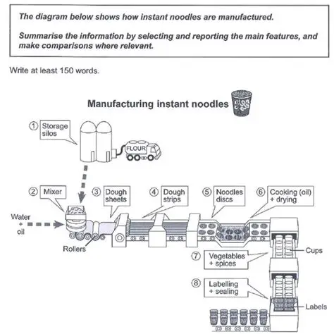

Week 20, Day 37 — After-Lecture Practice
Five quick checks on today's core rules before you build a full report.
Diagnose real problems, read a new flowchart, transform active sentences into passive, and combine two steps into one.
These items stack more than one issue at once, or test a flowchart with branching paths.

For multiple-choice and classification questions, this marks each one correct or incorrect and shows the right answer. For open writing questions, it shows a suggested answer for you to compare against.
Click "Prepare Submission" to review everything below, then choose how to send it — by email, by copying the text, or by downloading it as a file to attach.